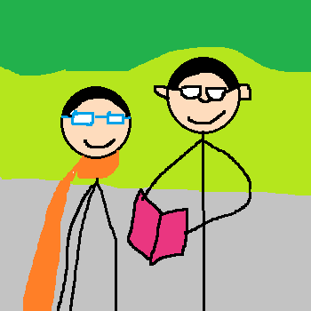

第176篇 日记
2026年03月14日 晴 Sat.
日常生活：第2次登好汉坡

今天上午，父亲带着我、妈妈和妹妹，跟约来的陈仁叔叔（跟父亲是同学关系）和陈熠然（陈仁叔叔的儿子）一起去爬庐山好汉坡。陈仁叔叔把车停在庐山索道下，父亲先去庐山索道那把陈仁叔叔和陈熠然接到好汉坡下，然后我们上山。陈熠然上山时走得特别快，尽管他不带登山棍。山上的阶梯都是用一块一块的石头搭成的。石头上有一些从旁边的松树上掉下来的松絮。有的已经枯成棕色了，有的没落下来多久，还是青绿色的。
陈熠然一下子就把大家甩远了，我便去追赶他。我走了好久，到了好汉亭，仍未看到他的身影。过了好汉亭，路就变陡了。走着走着总是腿酸。到了一个地境，终于见到了陈熠然。这个地境不好描述。就是有一个蓝底白字的告示牌，写着：
此处距离山顶2km大约还剩40分钟路程